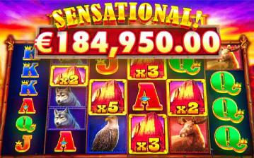
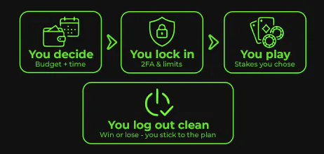
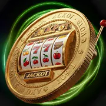
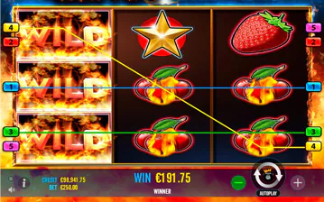
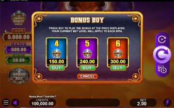
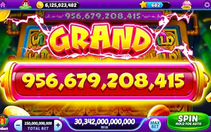
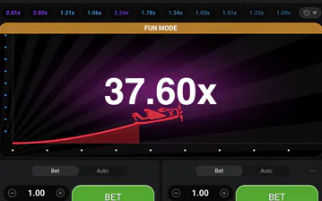
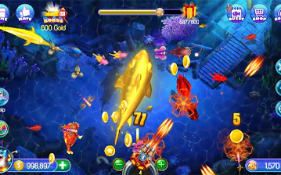

Megaways & “ways” games
Each spin can open many ways to win. Wins can come often, but swings up and down can be sharp. In the lobby, look for “Megaways” or “ways” in the name or filters.
Independent guide to M99 casino — updated August 2026
Whether you searched m99 game, m99game login, or m99 casino slots, M99Game breaks down what's actually on the platform: slot RTP ranges by studio, live-dealer table counts and languages, real wagering math on the bonuses, and the withdrawal steps that matter before you deposit—no “guaranteed win” chatter, just what we found checking the lobby ourselves.
Your session, step by step

Elite m99 casino sessions start before spin one—bankroll slicing, latency checks on live video, and promo rules taped beside your keyboard keep the experience premium instead of frantic.
Game library
M99 isn’t betting on “a few marquee slots”—it meshes thousands of RNG video slots from tier-one studios with parallel live-studio feeds, cinematic game-show hybrids, arcade shooters, turbo instant games, and lottery-style ladders where licences allow it. Figures below summarise a mature rollout; territorial licensing trims lists, studios sunset titles, so always confirm inside your logged-in lobby.
Important: “Total games” includes slots, live games, instant games, fishing games, and lottery-style games—whatever the site lists. Counts change when games are added or removed. After you log in, use the lobby filters on m99game.com to see what’s available to you.
Quick lobby samples—the real app shows live thumbnails, logos, and jackpots for your region.

These are the kinds of slot games people open most often. They don’t “pay more” by default—they’re just fast, flashy, or easy to find in the lobby.

Each spin can open many ways to win. Wins can come often, but swings up and down can be sharp. In the lobby, look for “Megaways” or “ways” in the name or filters.

Many games lock symbols and give extra spins, or climb a jackpot ladder. Check the rules: sometimes the biggest prizes only count if you bet higher—don’t assume.

Some games let you pay to jump straight to the bonus round. That’s risky in one shot—only use money you’re happy to lose, not money you’re trying to “win back.”

Some jackpots must drop by a set time (daily/hourly). They’re exciting, but the normal game still has a house edge. Check if your bet size qualifies for the jackpot before you auto-spin.

Very quick rounds (like crash-style games). Decide your cash-out goal and loss limit before you start—the game won’t wait for you to think.

Arcade-style games that feel a bit like skill games but still cost real money. They can eat your balance quickly—use the same budget rules as fast slots.
Live casinos run many tables at once over video. Below are the kinds of games m99 live casino players open most—from classic card games to TV-style game shows.

You bet on Player, Banker, or Tie. “Speed” tables run faster rounds. Good if you like a steady pace without memorising complex rules.

Pick a table that clearly shows when you can double, split, or surrender. Some tables offer “early cash out” if you want to leave the hand before it ends.

European roulette has one green zero; American often has two—so European is usually a bit fairer. Games with random multipliers are more swingy—bet smaller if you use those.

Sic bo uses dice; Dragon Tiger is a simple two-card showdown; game shows feel like TV with big bonus rounds. All three move fast—set a time limit before you play.
| Type | What you’ll see in the menu | Simple tip |
|---|---|---|
| Roulette | European, American, speed, auto, multiplier wheels | Check how many green zeros the wheel has before you bet the same pattern again and again. |
| Baccarat | Standard, no-commission, squeeze, speed, multi-seat | Scoreboards show past results—they don’t predict the next hand. |
| Blackjack | Classic, party, VIP, early payout, bet-behind | Check how long you have to act and how many decks are in play. |
| Game shows | Wheel spins, dice towers, hybrid boards | Bonus rounds can change your bet size—read the screen before you confirm. |
| Sic bo | Classic, fast-roll, multi-camera | Some bets look small but can lose fast—read the payouts. |
| Dragon Tiger | Two-card duel, side bets | Side bets add up; stick to small stakes if you use them. |
| Megaways slots | Ways engines, cascading reels | Lots of small wins can still hide big downswings—keep bets comfortable. |
| Jackpot slots | Progressive, must-drop, daily pots | Check whether your bet size qualifies for the jackpot. |
| Hold & spin | Lock-in collect features | Bigger prizes often need higher bets—check the rules. |
| Bonus buy | Feature purchase menus | You pay once for a volatile round—only use spare fun money. |
| Fast / instant games | Crash, mines, ladders | Decide when you’ll stop (win or lose) before the first round. |
For more detail, read the slots guide and live casino guide. If you use a bonus, check how each game type counts toward the offer—live games are often limited.
Why players choose M99
m99 players rarely stick around because of “one flashy banner”—they stick because the UX flows: synced wallets powering both m99 slots and m99 live dealer tables without relogging; frequent reload promotions that acknowledge high-volume grinders; HD streams with low-latency roadmaps; and RG toggles that sit beside deposit buttons. M99Game documents each lever so you can evaluate the brand like a product analyst, not a passive clicker.
Fast cashouts. A slots lobby refreshed with new titles every week. Live baccarat tables with presenters who actually engage players. Bonuses that reload on Thursdays and Fridays, not just for sign-ups. A VIP program that rewards consistency. These are the features M99 game regulars mention when asked why they stay—and they're the same features we cover in detail across every guide on this site.
Studios add and retire titles every month, so we recheck our guides against the live lobby on a regular schedule rather than publishing once and walking away.
What we found testing M99
Marketing pages promise "instant" everything. Here's what we clocked ourselves across multiple sessions, so you know what to expect before you fund an account.
| What we measured | What we saw | Notes |
|---|---|---|
| Deposit time | 1–5 minutes | E-wallets and local bank transfers cleared near the fast end; card deposits sometimes took longer. |
| Bonus redemption | Immediate | Match bonuses and free spins credited to the account as soon as the deposit registered—no manual claim delay. |
| Withdrawal time | 24–48 hours | From request to funds landing, once KYC was already verified. Unverified accounts should expect extra time for document checks. |
| Customer service response | 1–15 minutes | Live chat response speed varied by time of day; fastest replies came during peak evening hours. |
Your results may differ: payment method, region, KYC status, and how busy support is at the time all affect these numbers. Treat this as a realistic range, not a guarantee.
Player wisdom
Every M99 slot shows its symbols, paylines, bonus triggers, and RTP in the help screen. Players who take 60 seconds to read it always have a better session—they know what they're chasing before it happens.
Set device alarms and use in-app loss caps before you start—you're managing your own adrenaline, not the game's math. Short, planned m99 online casino sessions stay fun longer than open-ended ones.
Prefer studio-published RTP sheets and in-game ranges; cross-check regulatory portals when uncertain. Transparency strengthens trust on competitive m99game searches.
Every M99 bonus has a wagering requirement—how many times you must bet before winnings become withdrawable. Players who read this once before claiming are never surprised at cashout.
Live tables feel real—and that can nudge you to chase. Pros match minimums to the bankroll and bounce when the vibe goes flat.
Which method works in your region? How long do withdrawals take? Sort it before you’re staring at a pending screen.
Closing the app ends the “one more spin” loop. Next time you play m99, it’s a choice—not autopilot.
Everything you need to know
Megaways, hold & spins, ante bets—decode volatility so your m99 slot picks land with intention.
Roadmaps for speed baccarat, blackjack ladders, immersive roulette—the social layer of m99game.
Match math that protects bankrolls—wagering calculators, expiry traps, weighted game charts.
Onboarding KYC checkpoints, cashier routing for m99 login traffic, and mobile latency tips that keep payouts boring—in a good way.
Signals, tooling, clinician-backed resources—paired with sober m99 context.
Launch the sanctioned lobby—sync promos with the guides you just bookmarked.
About M99Game
M99Game is written and reviewed by Borislav Bozhilov, SEO Manager at iGaming.com with 5+ years covering the online casino industry. We don't just repeat marketing copy—we time things ourselves. Our deposit, withdrawal, bonus, and support timing table above comes from testing real accounts across multiple sessions, and we revisit pages when the platform changes rather than publishing once and leaving them stale. Pages link out to health authorities (WHO gambling FAQ) and player-support organisations so our claims face independent scrutiny—not anonymous forum lore.
We are not the M99 licence holder. The operator cites a Curaçao gaming license (8048/JAZ2017-067), a reference number from Curaçao's pre-2024 master-license system. Since the December 2024 regulatory reform, only a direct license from the Curaçao Gaming Authority counts as current proof of authorization—verify status yourself before you deposit rather than trusting a badge on any casino site, including this one's sources. What we publish is explanatory journalism: unpacking product breadth (m99 slots, hybrid instant games, m99 live casino suites), wagering math, phishing hygiene, payout friction, plus transparent labelling whenever we route you to sanctioned play URLs.
If our guidance ever conflicts with onsite terms from the regulated operator you choose, theirs wins. Spot an outdated stat after a studio rollout? Ping us via Contact us so we can re-check it—we timestamp substantial refreshes inside structured data.
FAQ
Play smart
Thrills headline m99game marketing, yet sustainable players treat deposits as prepaid entertainment—you’re underwriting sound, UX, presenters, jackpot drama. Anything returned is goodwill, never salary.
Responsible UX—cool-off sliders, AML transparency, multilingual hosts—is part of modern m99; pair it with deliberate stake cadence instead of improvisation.
Quick navigation: M99 bonuses, M99 live casino, M99 slots, or the full sitemap. However you play, stick to your plan and make sure every session is one you chose intentionally.
For independent context on safer play, see the WHO gambling Q&A and Gambling Therapy's international support network. Our responsible gaming page lists free, confidential helplines for players across Malaysia, the Philippines, Vietnam, Indonesia, Thailand, Singapore, and Australia.
Big win? Think about withdrawing some before you raise your bets. Rough night? Close the app—the games will still be there later.
Players who stick with m99 casino long-term usually say the same thing: withdrawals arrive when they're supposed to, the lobby filters actually work, and support responds instead of stalling. That's a lower bar than the marketing suggests—and worth checking for yourself in your first few sessions.
New to m99game? Spend your first few nights on three things: browse the slots catalogue without betting big, watch a live table to learn the pace, and run the numbers on a bonus offer before you claim one. Coming back after a break? Update your app, re-confirm your account details, and check whether promo terms changed while you were gone.
Ignore "can't lose" system claims from forums and Discords—they're not real. Never share your login or OTP codes with anyone claiming to be support. Report phishing attempts to the operator directly, and if a session stops feeling fun, our responsible gaming page has tools and helplines ready.